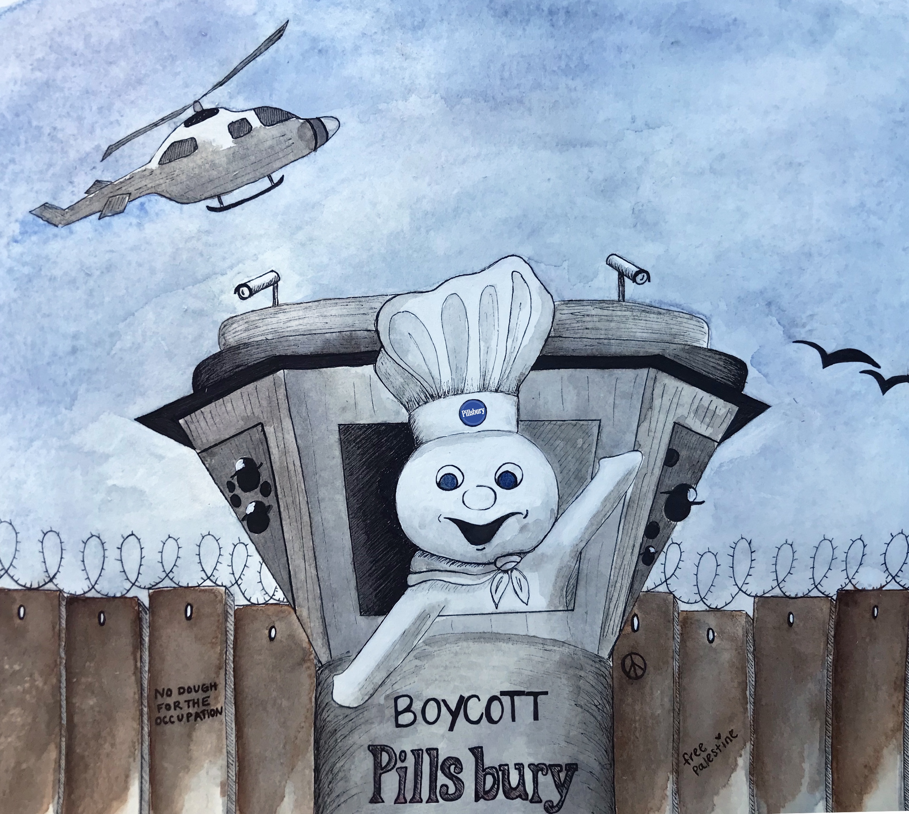
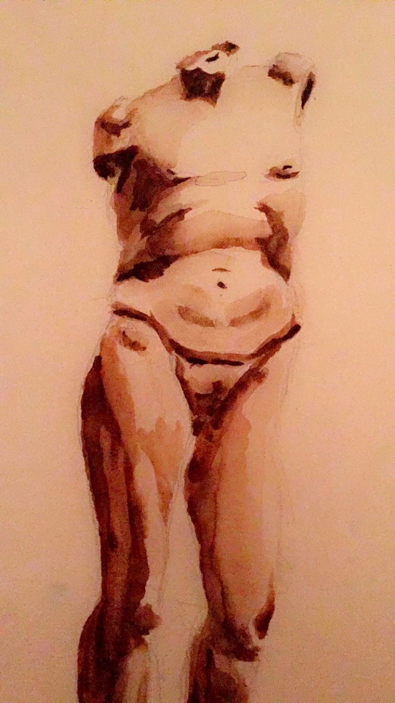
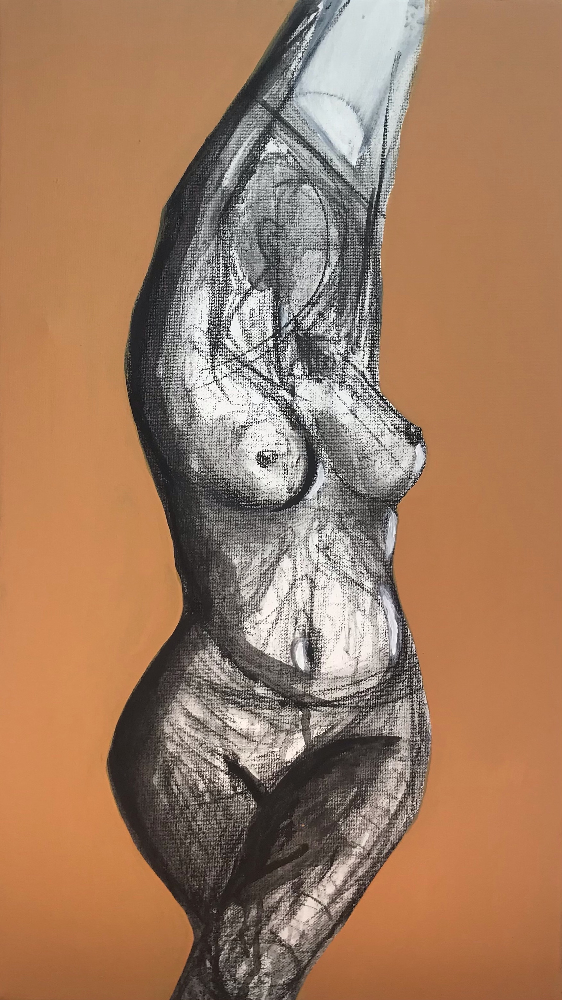
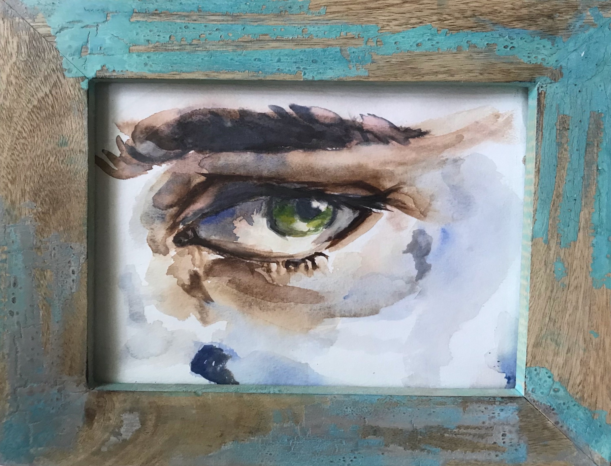
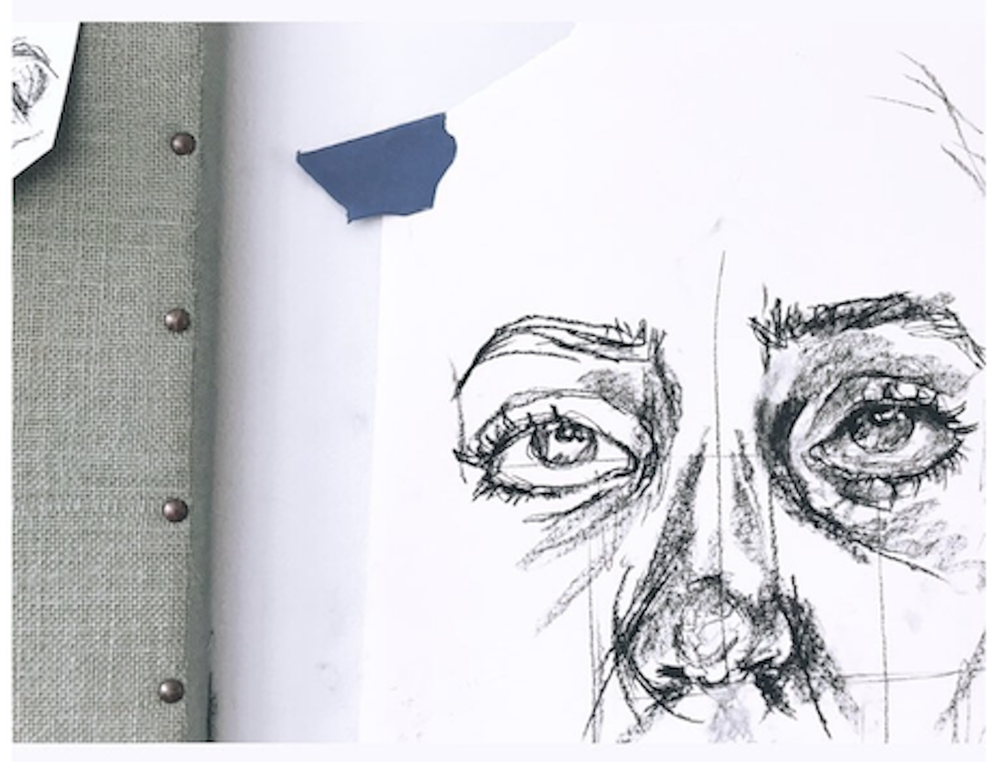
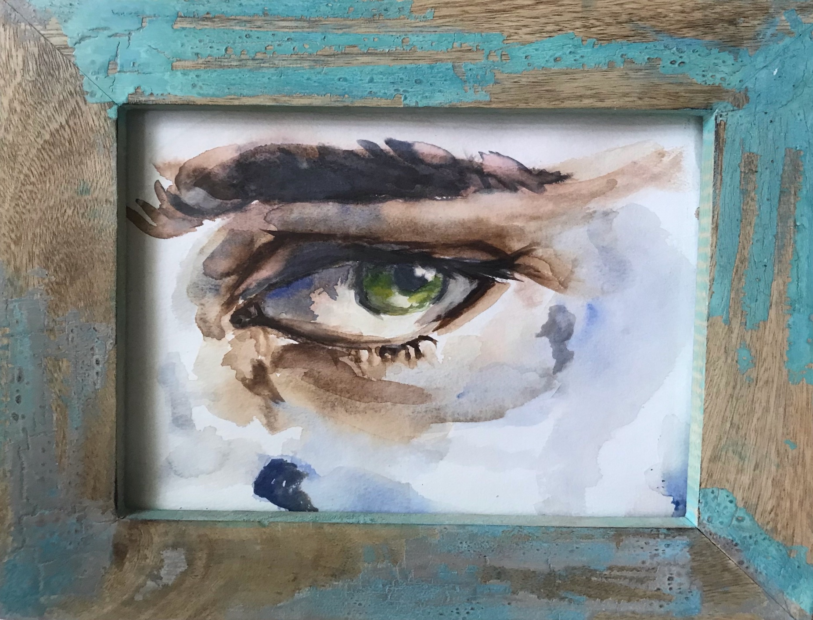
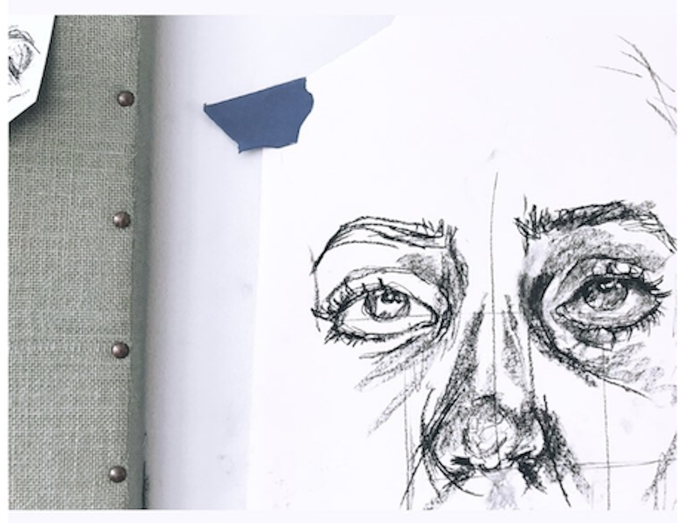
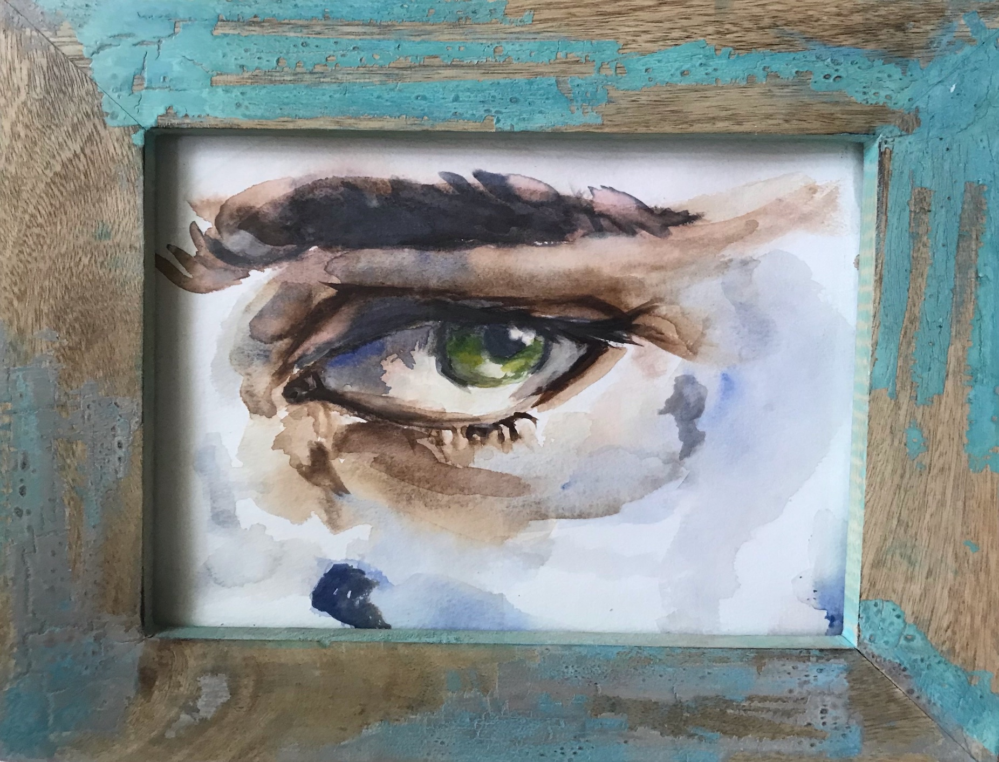
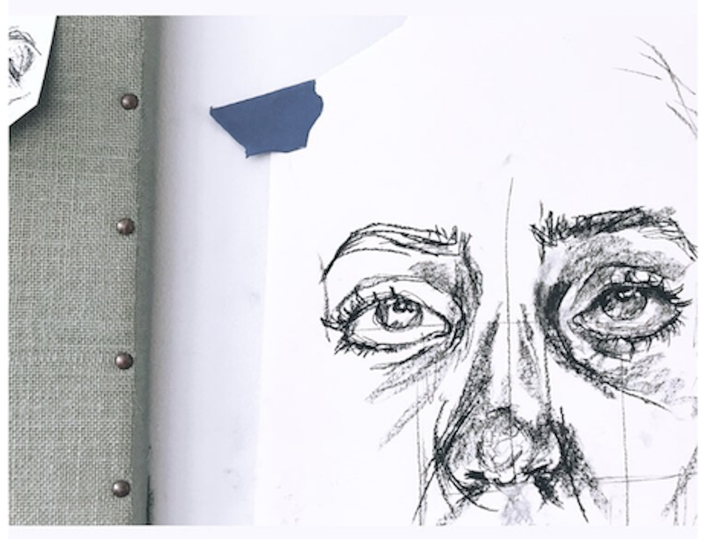

These are my selected pieces of work, highlighting a range of mediums. These pieces showcase both personal and commissioned projects. You'll notice that I typically work with watercolor and charcoal. If there's something you like, leave me a note!





 





